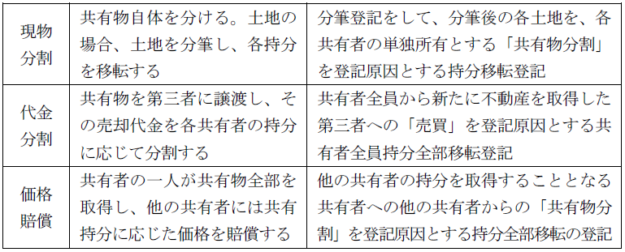
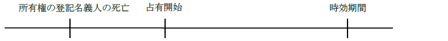
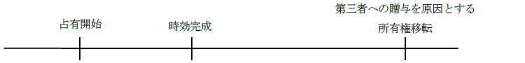

第１編 各 論
第１章 所有権の登記
第２節 所有権移転の登記
Ⅰ 所有権移転の登記（特定承継）
各共有者は、共有物分割禁止の定めをした場合を除き、いつでも共有物の分割を請求することができる（民法256条1項）。
【申請例9 持分移転 共有物分割】
事例： ＢＣ共有土地（各持分2分の1）について、令和○年6月28日、Ｂが、Ｃに持分を譲渡する共有物分割協議が成立した。土地の課税標準の額は、金2000万円である。
1. 申請情報の内容
・登記原因及びその日付
登記原因は「共有物分割」と記載し、日付は所有権移転の日を記載する。所有権移転の日は、原則として、共有物分割協議が成立した日である。
なお、「共有物分割による交換」を登記原因とする所有権移転登記の登記原因の日付も、共有物分割協議の成立した日である。
2. 分割方法

3. 登記申請の可否
(1) Ａ及びＢが共有する甲土地及び乙土地について、共有物分割によりＡが甲土地を、Ｂが乙土地をそれぞれ単独所有する場合の、甲土地については、ＡへのＢ持分全部移転登記、乙土地については、ＢへのＡ持分全部移転登記は、それぞれの土地について各別に共有物分割による持分の全部移転登記を申請することができるか？
→ できる。
(2) Ａ所有名義の不動産が、実体上はＡ・Ｂの共有である場合において、Ａ・Ｂ間で当該不動産をＢが単独で所有する旨の共有物分割の協議が調ったときは、これを原因とする所有権移転登記の申請をすることができるか？
→ できない（昭53.10.27民3.5940）。この場合には、更正登記等によりＡ・Ｂ共有名義にしてから、共有物分割を原因とする持分移転登記を申請すべきである。
(3) 共有地の分割協議において、分筆後の1筆の土地については単有とし、他の土地については元の持分と異なる持分で共有とする旨の分割協議がなされた場合、その登記原因を「共有物分割」として移転登記を申請することができるか？
→ できる（昭44.4.7民3.426）。
(4) Ａ及びＢが所有権の登記名義人である甲土地をＡの単独所有とし、その代わりにＡが所有権の登記名義人である乙土地をＢの所有とする旨の共有物分割の協議に基づき、乙土地について「共有物分割」を登記原因として所有権移転登記を申請することができるか？
→ できない。乙土地について申請する所有権移転登記の登記原因は、「共有物分割による交換」（記録例224）若しくは「共有物分割による贈与」である。
共有者の1人が、その持分を放棄したときは、その持分は、他の共有者に帰属する（民法255条）。
共有者の1人が持分を放棄し、その持分が民法255条により他の共有者に帰属した場合、実体法上は放棄があったのであるから、当該持分の抹消登記をすべきであるとも考えられるが、登記手続上は、他の共有者への持分移転登記を申請すべきであるとされている（大判大3.11.3）。
【申請例10 持分移転 共有持分の放棄】
事例： ＢＣ共有土地（各持分2分の1）について、令和○年6月28日、Ｂが、持分を放棄した。土地の課税標準の額は、金2000万円である。
1. 申請情報の内容
・登記原因及びその日付
登記原因は「持分放棄」と記載し、日付は持分放棄の意思表示をした日を記載する。
2. 登記申請の可否
(1) Ａ、Ｂ及びＣの共有に属する不動産について、Ａのみが持分放棄をしたときに、持分放棄を原因とするＢに対するＡ持分全部移転の登記を申請することはできるか？
→ できない（登研470P.97参照）。
共有者の1人がその持分を放棄した場合において、他の共有者が複数あるときは、それらの者が有する持分の割合に従って、放棄された持分が帰属するからである。
(2) Ａ、Ｂ及びＣの共有に属する不動産について、Ａの持分放棄によりＢに帰属した持分のみ移転登記がされている場合において、Ａの残余持分につき第三者Ｄを権利者とする売買による持分移転の登記を申請することができるか？
→ できる（昭44.5.29民甲1134）。
ＡがＣに対して放棄した持分の帰属については、Ｃと第三者Ｄは対抗関係に立ち、先に登記を備えたＤがＣに優先するからである。
(3) 共有持分を放棄した者と、その持分の一部が帰属した他の共有者の一部の者で、その帰属持分についてのみ移転の登記を申請することができるか？
→できる（昭37.9.29民甲2751）。
(4) Ａ、Ｂ及びＣの共有に属する不動産について、Ａの持分放棄を原因とするＢ及びＣに対するＡ持分全部移転の登記の申請は、共有者の1人であるＢと登記義務者であるＡとが共同してすることができるか？
→ できない（登研577P.154）。
登記という対抗要件を備えるかどうかは、各自の自由であるからである。
(5) Ａ・Ｂ共有名義の不動産について、ＣがＢからその共有持分を譲り受けた後、Ａが持分を放棄した場合、ＢからＣへの共有持分移転登記を経由しないで、Ａの持分についての持分放棄を原因とするＣへの共有持分移転登記の申請をすることはできるか？
→ できない（昭60.12.2民3.5441）。
共有持分移転登記は、あくまで登記記録に共有者として記録されている者に対してのみすることができる。
20年間、所有の意思をもって、平穏に、かつ、公然と他人の物を占有した者は、その所有権を取得する。また、10年間、所有の意思をもって、平穏に、かつ、公然と他人の物を占有した者は、その占有の開始の時に、善意であり、かつ、過失がなかったときは、その所有権を取得する（民法162条）。
時効取得は原始取得であるので（大判大7.3.2）、原所有者によって抵当権が設定されていたとしても、その抵当権は、時効取得の効果として消滅する（民法397条）。
【申請例11 所有権移転 時効取得】
事例： Ｂが、Ａ所有土地を、平成12年6月27日から平穏かつ公然に占有を開始し、時効期間が経過した。Ｂが、令和○年6月30日Ａに時効取得を主張した。土地の課税標準の額は、金1000万円である。
1. 登記申請手続
(1) 登記申請の方法
時効取得の登記は所有権移転登記による（明44.6.22民414）。時効取得は原始取得なので、本来は原所有者の登記を抹消し、時効取得者名義の所有権保存の登記をする等すべきである。しかし、そこまですると当事者に過度の負担を強いることになるため、便宜、所有権移転の登記によるとされた。
(2) 登記原因及びその日付
登記原因は「時効取得」と記載し、日付は占有開始日を記載する。時効の効力は、その起算日にさかのぼるので（民法144条）、取得時効が完成すると、時効取得者が、占有を開始した時点から目的物を原始取得することになるからである。
(3) 申請人
登記権利者：時効取得者
登記義務者：原所有者
(4) 添付情報
①登記原因証明情報（61条、不登令別表30添付情報イ）
時効取得の要件充足を説明するために、要件を満たしつつ一定の期間所有の意思をもって占有した旨、期間経過後に援用した旨等を内容としなければならない。
②登記識別情報（22条本文）
登記義務者（原所有者）が所有権を取得した際の登記識別情報
③印鑑証明書（不登令16条2項、18条2項）
登記義務者（原所有者）の印鑑証明書を提供する。
※未成年者が登記義務者となって時効取得を原因とする所有権の移転登記をする場合、当該未成年者の親権者の同意を証する情報の提供を要しない。時効による権利変動は法律行為によるものではないからである（登研529P.162、民法5条1項参照）。
2. 登記申請の可否
(1) 時効の起算日前に所有権の登記名義人が死亡していた場合には、時効取得を原因とする所有権移転の登記の前提として、所有権の登記名義人から相続人への、相続を原因とする所有権移転の登記がされていることが必要か？

→必要である（登研455P.89）。
(2) 時効完成後に時効を援用した占有者が死亡した場合、その相続人を登記名義人とする時効取得を原因とする所有権移転の登記を申請することができるか？
→できない。被相続人において時効の援用があったときは、直接相続人名義とすることはできず、被相続人名義に登記のうえ相続人名義とする所有権移転の登記をすることになる。
これに対し、被相続人において時効の援用がなかったときは、相続人において援用することができ、直接相続人名義とする所有権移転の登記をすることができる。
(3) 時効の完成後に贈与を原因とする所有権移転の登記がされている場合、占有者は、現在の所有権登記名義人と共同で、時効取得を原因とする所有権移転の登記を申請することができるか？

→できない。時効完成後の受贈者と、時効取得を主張する者は、対抗関係に立ち、先に登記を備えた者が優先するからである（最判昭33.8.28）。
(4) 時効の起算日後に出生した者が、時効の完成前に占有者を相続した場合には、自らの出生日前の日付の時効取得を原因とする所有権移転の登記を申請することができるか。
→できる（登研603P.135）。
(5) Ａ及びＢの共有の登記がされている不動産について、Ｃは、Ａの持分のみについて、時効取得を原因とするＡ持分全部移転の登記を申請することができるか？
→できる（登研397P.83）。
登記という対抗要件を備えるかどうかは各自の自由であり、共有不動産に係る所有権移転登記を一括して申請しなければならないとする規定もないからである。
(6) 不在者の財産管理人や相続財産清算人が登記義務者として、時効取得を登記原因とする所有権移転登記を申請する場合、家庭裁判所の許可を要するか？
→要する。この場合、家庭裁判所の許可書を提供しなければならない（不在者財産管理人につき登研548P.165、相続財産清算人につき登研492P.119）。
3. 抵当権等が設定されていた場合
第三者が抵当権の目的不動産を時効取得した場合、時効取得は原始取得であるので（大判大7.3.2）、当該不動産に設定されていた抵当権は消滅する（民法397条）。抵当権が、時効取得の起算日前から設定されているか、起算日後に設定されたかは問わない。地上権の目的不動産が時効取得された場合も同様である。
しかし、既登記の不動産の、時効による所有権取得の登記は、所有権移転の登記によりなされるため（明44.6.22民414）、登記官の職権により抹消登記をすることはできず、当事者がこれらの登記の抹消を申請する必要がある。
（※）年月日は、時効取得の起算日（時効取得者の当該不動産の占有開始日）である。
協議上の離婚をした者の一方は、相手方に対して財産の分与を請求することができる（民法768条1項）。
【申請例12 所有権移転 財産分与】
事例： 辰已太郎と辰已花子（旧姓高田）は、令和○年6月20日、財産分与として、辰已太郎の所有する甲土地を辰已花子に譲渡する協議が成立し、令和○年6月28日、離婚届が提出された。土地の課税標準の額は、金1000万円である。
1. 申請情報の内容
(1) 登記原因及びその日付
登記原因は「財産分与」と記載し、日付は、原則として、協議による場合には、協議が成立した日、審判又は調停による場合には、審判確定日又は調停成立日を記載する。ただし、離婚届出前に協議が成立していた場合には、離婚届提出日となる（登研490P.146）。
(2) 申請人
登記権利者：財産分与によって権利を取得する者
登記義務者：財産分与によって権利を失う者
審判又は調停に基づく場合の所有権移転登記申請は、登記権利者が単独ですることができる（63条1項）。
(3) 添付情報
・登記原因証明情報（61条、不登令別表30添付情報イ）
財産分与の協議を証する書面（財産分与協議書等）が該当する。
※離婚を証する書面も登記原因証明情報の一部となり得る。
2. 登記申請の可否
・内縁離婚をした件につき、「被告は、原告に対し、○○の不動産につき、年月日財産分与を原因とする所有権移転登記手続をせよ」との判決正本を添付して所有権移転登記を申請する場合には、登記原因を「財産分与」とすることができる（昭47.10.20民3.559）。内縁関係が当事者の生存中に解消された場合、民法768条の財産分与の規定が類推適用されるためである（最決平12.3.10）。
贈与のうち、贈与者の死亡の場合に効力が生じることと定められたものを、死因贈与という。死因贈与は、遺贈と異なり、契約である。
【申請例13 所有権移転 死因贈与】
事例： Ａは、令和○年6月28日、死亡した。同年3月10日、ＡＢ間において、「Ａが死亡した場合、甲土地をＢに贈与する」旨の贈与契約が締結されていた。Ａの相続人は、Ｄのみである。甲土地の課税標準の額は、金1000万円である。
1. 申請情報の内容
(1) 登記原因及びその日付
登記原因は「贈与」と記載し、日付は死因贈与の効力が生じた日、原則として、贈与者死亡の日を記載する。
(2) 申請人
登記権利者：受贈者
登記義務者：贈与者の相続人（複数いる場合は全員）
(3) 添付情報
①登記識別情報（22条本文）
登記義務者（死亡した贈与者）の登記識別情報
②相続証明情報（62条、不登令7条1項5号イ）
贈与者の相続人が申請人となるため、相続証明情報の提供が必要とされる。
③印鑑証明書（不登令16条2項、18条2項）
登記義務者（相続人全員）の印鑑証明書